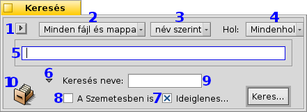
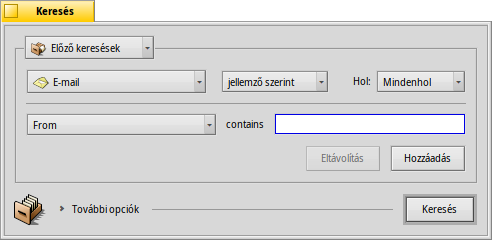
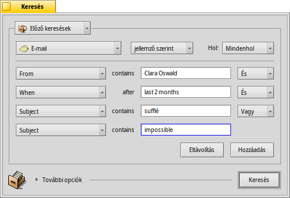
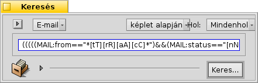

| Index |
|
A kereső ablak Egyszerű lekérdezések - "név szerint" Összetett lekérdezések - "jellemzők szerint" Még összetettebb lekérdezések - "képlet alapján" Az eredmény ablak Keresési sablonok |
Lekérdezések
A lekérdezés nem más, mint fájlok keresése jellemzők alapján, és végrehajtható mind a Nyomkövetőben, mind a Terminálban. A lékérdezések (keresések) a /boot/home/queries/ mappában kerülnek eltárolásra, és alap esetben 7 nap után törli azokat a rendszer. Itt megjegyzendő, hogy ezek a keresések nem egy állandó eredmény tárolnak, hanem azok megnyitásakor a rendszer újra és újra végrehajtja a keresést.
Persze, nem csak e módon kaphatjuk meg a keresések eredményét. A menü navigációnak köszönhetően egy elmentett keresésen jobb gombbal kattintva a helyi menüben is megjelenik a keresés eredménye.
 A kereső ablak
A kereső ablak
Új keresés indítható az Asztalsáv menüjéből, bármely Nyomkövető ablakból, az Asztalról vagy épp az ALT F kombinációval. Minden esetben egy kereső ablakkal találkozunk:
Előző vagy mentett keresések megnyitása, vagy a jelenlegi paraméterek mentése keresési sablonként.
Keresés között, vagy megadott típusú fájlokban.
- A keresés módjának meghatározása:
- - egyszerű keresés fájl vagy mappa nevek alapján
- - keresés egy vagy több jellemző alapján
- - összetett keresési lehetőséget nyújt
Melyik lemezen keressen a rendszer.
A keresés feltétele.
További opciók megjelenítése/elrejtése..
Az opció bejelölésekor a keresés csak en kerül eltárolásra, és 7 nap után automatikusan törlődni fog.
A rendszer keresni fog.
Lehetőségünk van a keresésnek egy elnevezést is adni.
Ezt az ikont bármely Nyomkövető ablakba történő húzásával a keresés gyorsan eltárolható. Ezt a jobb gombbal végrehajtva sablonként menti el a program a keresést.
Egyszerű lekérdezések - "név szerint"
Hacsak egyszerűen egy fájl vagy mappa nevében akarunk keresni a csatolt lemezeken, akkor a keresés módja történik. Ekkor csak a feltételt kell beírni a mezőbe, és lenyomni az ENTER-t.
Összetett lekérdezések - "jellemző szerint"
Egy új összetett keresés indítható, ha először megadjuk a fájl típusát, és a jellemző szerinti módot választjuk. Ehhez persze a jellemzőknek indexelve kell lenniük.
A példában a fájl típusa a helyett és a keresés módja .
Ekkor megjelenik egy menü, egy beviteli mező és egy és gomb. A menüből ki kell választanunk azt a jellemzőt, amire keresni szeretnénk. A és az gombbal további jellemzők is hozzáadhatóak, vagy meglévők törölhetőek. Több jellemző között És és Vagy kapcsolat közül választhatunk.
Most hajtsunk végre egy keresést a leveleinkre:
This is your Find window when you're looking for all emails Clara Oswald has sent to you in the last two months that had in the subject "sufflé" or "impossible".
As you see, searching through time-based attributes supports some useful phrases: besides for the "last 2 months", you could also use "today", "yesterday", "Monday" or "last Monday" (which would be the Monday last week), or "last 2 minutes/hours/days/weeks".
A good way to cut down the number of search results.
Még összetettebb lekérdezések - "képlet alapján"
Kézzel megírni egy keresési képletet hosszadalmas és nem is igazán praktikus.
Ha már megadtunk minden jellemzőt és feltételt, akkor a mód választásakor megkapjuk az annak megfelelő képletet:
Kicsit olvashatóbb formában:
(((((MAIL:from=="*[cC][lL][aA][rR][aA] [oO][sS][wW][aA][lL][dD]*")
&&(MAIL:when>=%2 months%))
&&(MAIL:subject=="*[sS][uU][fF][fF][lL][éÉ]*"))
||(MAIL:subject=="*[iI][mM][pP][oO][sS][sS][iI][bB][lL][eE]*"))
&&(BEOS:TYPE=="text/x-email"))
Mire is használható mindez?
Levélben, fórumon vagy IRC-n keresztül is megosztható másokkal.
You can use this method to construct a query in mode and then switch to mode, to comfortably generate a search string. Enclosed in single quotes, that string can then be used with the query command in the Terminal.
Tovább hangolható a képlet, ha helyettesítő karaktereket is használunk, figyelünk a betű-érzékenységre illetve ellentétes feltételeket adunk meg. Például: "==" helyett "!=" az És tagadásaként. Csupán az alapokat kell elsajátítanunk a általános kifejezés oldalon és esetleg egy kis szkriptelési ismereteket is szereznünk kell.
Az eredmény ablak
A keresés indítása után a kereső ablakot felváltja az eredmény ablak. Itt egy példa a "server" szót tartalmazó találatokra:

A szürke háttértől függetlenül ez az ablak épp úgy működik, mint bármely Nyomkövető ablak. Néhány dolog talán még jobban is:
Egy találat mappája megnyithat ha az útvonalon kattintunk.
A menüvel vagy az ALT G kombinációval visszajutunk a kereső ablakba, ahol módosíthatjuk a feltételeket.
A keresés élő, vagyis például ha egy fájl, ami megfelel a keresési feltételnek és megjelenik a keresés helyén (azon a lemezen, ahol keresünk) vagy épp eltűnik onnan, akkor a változást azonnal látjuk az ablakban.
Az eredmény ablak megjelenését a keresett fájltípusnak megfelelően alakíthatjuk ki. Ezt akár úgy is megtehetjük, hogy egy meglévő mappát megnyitunk, aminek megfelelő az elrendezése (a megfelelő oszlopok jelennek meg), és azt átmásoljuk a menüvel.
Nyissuk meg a /boot/home/config/settings/Tracker/DefaultQueryTemplates mappát, majd hozzunk létre egy új mappát csoport/fájltípus néven, ahol a "per" jelet kicseréljük egy aláhúzás jellel, például "audio_x-mp3". Ezután ezt megnyitva a menüt választva az előbb másolt elrendezést alkalmazhatjuk ezen a mappán.
Keresési sablonok
Ha egy elmentett keresésen duplán kattintunk, akkor azonnal elkezdődik a keresés és mindjárt a keresés eredményét látjuk. Ugyanakkor nem biztos, hogy épp ezeket a keresési paramétereket akarjuk használni, hanem csak kicsit hangolni szeretnénk rajta.
A menüt választva (az 1-es pont az első képen) vagy az ikont (10-es pont) egy Nyomkövető ablakba húzva jobb gombbal készíthetünk sablont. Ezen duplán kattitnva nem az eredmény ablakot nyitja meg, hanem a kereső ablakot lehetőséget adva a feltételek módosítására.
Bárhová is hozzunk létre sablonokat, az megjelenik a kereső ablak menüjében.